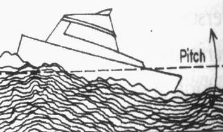
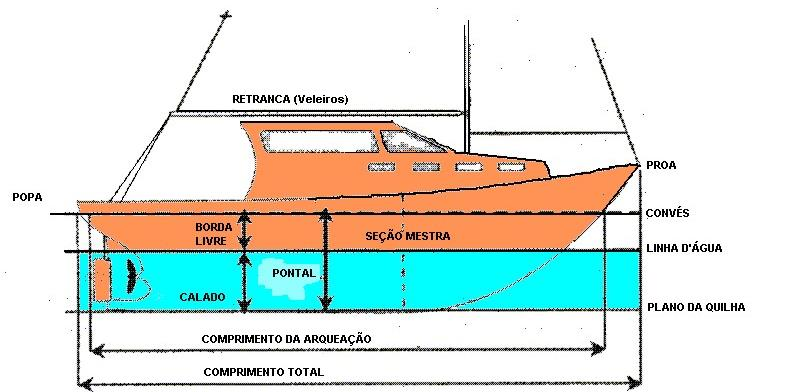
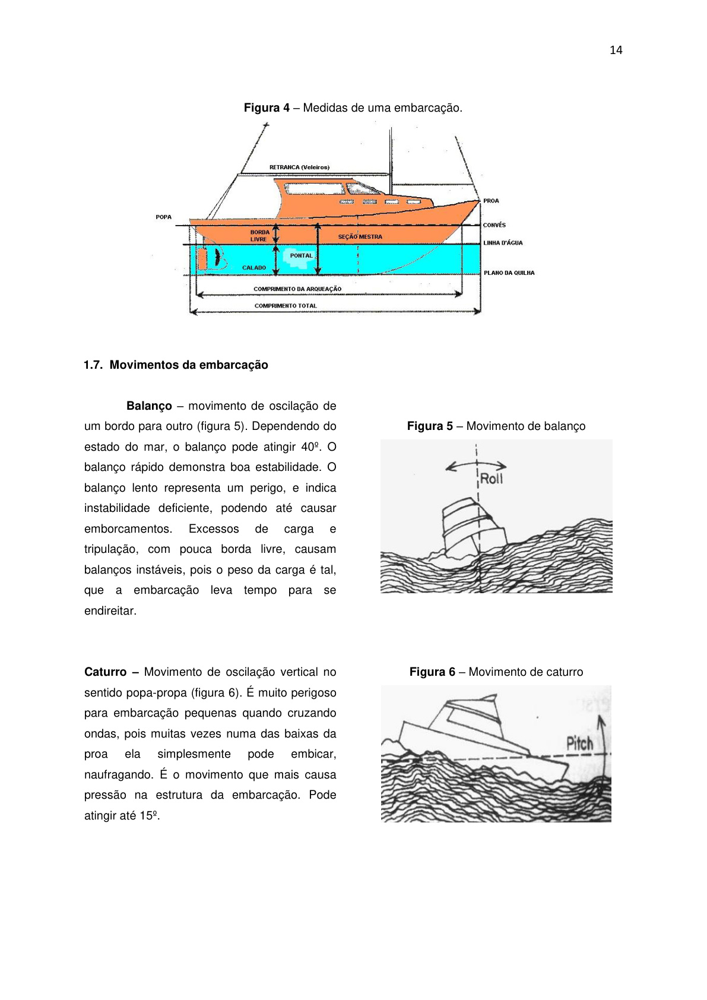
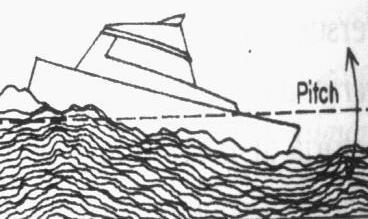
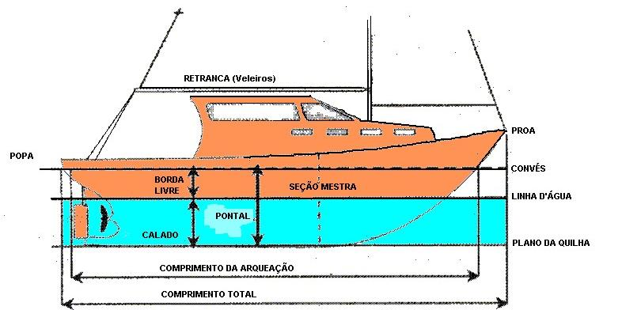
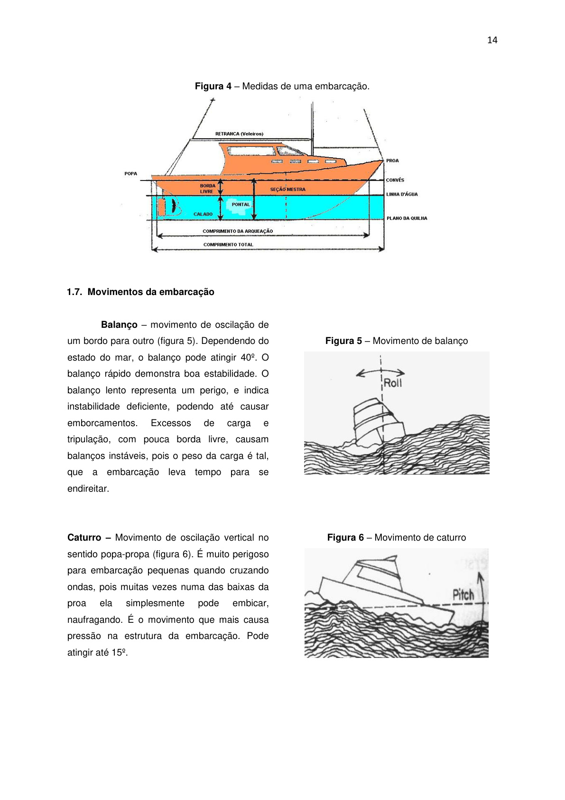

Apostila 2021 - Regras de Navegação
4.6. Embarcações a vela em movimento
Uma embarcação a vela em movimento, à noite ou sob visibilidade restrita, deve exibir:
- luzes de bordos
- luz de alcançado
Além das luzes acima prescritas, uma embarcação a vela em movimento pode exibir como luzes opcionais, no tope do mastro ou próximo deste, onde possam ser melhor vistas, duas luzes circulares dispostas em linha vertical sendo a superior encarnada e a inferior verde. Estas luzes são mostradas nas figuras 41 e 42.
Nos anexos, você encontrará um resumo sobre as luzes nas embarcações disponibilizado pela Marinha Brasileira que resume esta parte de luzes, servindo como guia rápido de identificação.
4.7. Manobras
4.7.1. Roda a Roda
Esta é a situação quando duas embarcações encontram-se em mesma direção, porém sentido contrários, com risco de colisão eminente. Ambas as embarcações devem guinar à boreste (BE), fazendo ambas passarem à bombordo (BB) da outra.
4.7.2. Ultrapassagem ou Alcançando
Indiferente a situação, toda embarcação que esteja ultrapassando outra deverá manter-se fora do caminho desta.
4.7.3. Situação de Rumos Cruzados ou de Colisão
Quando nos deparamos com duas embarcações que navegam em rumos que se cruzam e envolva risco de colisão, a embarcação que avistar a outra de boreste (BE), deverá se manter fora do caminho desta.
4.7.4. Efeitos que influenciam na embarcação
Ao navegarmos em regiões que apresentam restrições, ocorrem influência do local e algumas outras condições sobre a navegação da embarcação. Nestes casos deveremos tomar alguns cuidados e realizar alguns procedimentos, principalmente se a embarcação for a propulsão mecânica.
4.7.5. Interação entre embarcações
Ao navegarmos, podemos nos deparar com situações onde duas embarcações passam em rumos paralelos e em sentido contrário, a pequena distância, pode haver uma interferência recíproca devido ao movimento das águas.
4.7.6. Esquema de Separação de Tráfego
No esquema de separação de tráfego, nenhuma embarcação é dispensada de sua obrigação perante qualquer outra regra.
4.7.7. Embarcação Obrigada a Manobrar
Toda embarcação obrigada a se manter fora do caminho de outra embarcação deverá, tanto quanto possível, manobrar antecipada e substancialmente.
4.7.8. Regra da Preferência
Esta regra define quem deve manobrar, dependendo da propulsão, emprego e situação da embarcação.
4.7.9. Embarcações em Visibilidade Restrita
Conforme a regra 19 do RIPEAM, ao nos deparamos em navegação com situação de visibilidade restrita devemos seguir em velocidade segura.
4.8. Sinais Sonoros
Ao navegarmos em condições de visibilidade restrita, devemos nos comunicar com as demais embarcações próximas utilizando sinais sonoros.
Estes sinais podem ser formados entre 2 padrões distintos: apito curto (.) e apito longo (!).
Tabela 4 – Sinais Sonoros de Advertência
| Sinal | Descrição | Manobra |
|---|---|---|
| . | Um apito curto | Estou guinando para boreste (BE). |
| .. | Dois apitos curtos | Estou guinando para bombordo. |
| ... | Três apitos curtos | Estou dando máquinas atrás. |
| !!. | Dois apitos longos e um apito curto. | Tenciono ultrapassar-la por seu boreste (BE). |
| !!.. | Dois apitos longos e dois apitos curtos. | Tenciono ultrapassar-la por seu bombordo. |
| !.!.! | Um apito longo, um curto, um longo e um curto. | Concordo com sua ultrapassagem. |
| ..... | Cinco apitos curtos. | Quando uma embarcação não consegue entender as intenções de manobra da outra. |
| ! | Um apito longo. | Aproximando-se de uma curva ou de uma área de um canal estreito ou via de acesso onde outras embarcações podem estar ocultas devido a obstáculos |
Tabela 5 – Sinais Luminosos
| Sinal | Descrição | Manobra |
|---|---|---|
| | Um lampejo rápido e curto | Estou guinando para boreste (BE). |
| | Dois lampejos curtos | Estou guinando para bombordo. |
| | Três lampejos curtos | Estou dando máquinas atrás. |
| | Cinco lampejos rápidos e curtos | Quando uma embarcação não consegue entender as intenções de manobra da outra. |
Tabela 6 – Equipamentos sonoros
| Embarcação de acordo com o tamanho | Equipamentos Sonoros |
|---|---|
| Maior que 50 m | Apito (.), Sino (S), Gongo (G) |
| Entre 12 e 50 m | Apito (.), Sino (S) |
| Menor que 12 m | Apito (.) ou qualquer dispositivo eficaz |
Tabela 7 – Sinais Sonoros indicando situação
| Sinal | Descrição | Situação |
|---|---|---|
| ! | Um apito longo em intervalos não superiores a 2 minutos | Embarcação de propulsão mecânica com seguimento |
| !! | Dois apitos longos sucessivos em intervalos não superiores a 2 minutos | Embarcação de propulsão mecânica sob máquinas, mas parada e sem seguimento |
| !.. | Um apito longo seguido de dois apitos curtos em intervalos não superiores a 2 minutos | Embarcação sem governo, restrita devido a seu calado, a vela, engajada na pesca, com capacidade de manobra restrita, rebocando ou empurrando |
| !...! | Um apito longo e três apitos curtos | Embarcação rebocada |
| SSSSS | Toques rápidos de sino durante cerca de 5 segundos, em intervalos não superiores a 1 minuto | Embarcação de comprimento inferior a 100 metros, fundeada |
| S G | Toque de sino a vante, seguido de toque de gongo a ré (ambos durante cerca de 5 segundos), a intervalos não superiores a 1 minuto | Embarcação de comprimento igual ou superior a 100 metros, fundeada |
| .!.! | Um apito curto, um longo e um curto | Embarcação fundeada, indicando sua posição e advertindo uma embarcação que se aproxima quanto à possibilidade de uma colisão. |
| SSS SG SSS | Três badaladas distintas, um toque de sino e, se determinado, gongo e três badaladas distintas | Embarcação encalhada |
| .... | Quatro apitos curtos | Sinal de identificação de embarcação engajada em serviço de praticagem. |
4.9. Balizamento
É o conjunto de regras aplicadas aos sinais fixos e flutuantes, visando a indicar as margens dos canais, as entradas de portos, de rios ou de qualquer via navegável, além de delimitar áreas perigosas ou perigos isolados.
4.9.1. Sinais de Balizamento
Conforme a indicação informada pela baliza ou boia, esta possui características que permitem sua identificação nos períodos diurno e noturno.
4.9.2. Sinais laterais
Bombordo (BB): Para serem deixadas por bombordo por que entra nos portos. Cor: encarnada; Formato: cônico, pilar ou charuto; Tope: cone encarnado com o vértice para cima; Luz: encarnada, qualquer ritmo exceto Lp (2+1).
Boreste (BE): Para serem deixadas por boreste por que entra nos portos. Cor: verde; Formato: cilíndrico, pilar ou charuto; Tope: cilindro verde; Luz: verde, qualquer ritmo exceto Lp (2+1).
4.9.3. Sinais laterais modificados
Canal preferencial a bombordo: Cor: encarnada com uma faixa larga horizontal verde; Luz: encarnada, Lp (2+1).
Canal preferencial a boreste: Cor: verde com uma faixa larga horizontal encarnada; Luz: verde, Lp (2+1).
4.9.4. Sinais Cardinais
Norte: Cor: preta sobre amarela; Tope: dois cones pretos com vértice para cima; Luz: branca, VQ ou Q.
Leste: Cor: preta com faixa amarela; Tope: dois cones unidos pelas bases; Luz: branca, VQ(3) ou Q(3).
Sul: Cor: amarela sobre preta; Tope: dois cones com vértice para baixo; Luz: branca, VQ(6)+LpL ou Q(6)+LpL.
Oeste: Cor: amarela com faixa preta; Tope: dois cones unidos pelos vértices; Luz: branca, VQ(9) ou Q(9).
4.9.5. Outras Balizas
Perigo isolado: Cor: preta com faixas encarnadas; Tope: duas esferas pretas; Luz: branca, Lp(2).
Águas seguras: Cor: faixas verticais encarnadas e brancas; Tope: esfera encarnada; Luz: branca, Iso, Oc, LpL 10s ou Mo(A).
Balizamento especial: Cor: amarela; Luz: amarela, diversos ritmos.
4.9.6. Placas ou bandeiras
Símbolos: X (trocar de margem), H (seguir meio do canal), Y (bifurcação), + (perigo isolado).
4.9.7. Sinais em pontes
Dois losangos amarelos: tráfego unidirecional; Um losango amarelo: bidirecional; Triângulo verde: tráfego à direita; Retângulo vermelho: tráfego à esquerda; Retângulo vermelho com faixa branca: proibido.
4.10. Manobras de atração e saída de cais
Para atracar deve-se, em geral, manobrar da seguinte forma: aproximar do cais, num ângulo de 45º, de modo a passar um cabo de proa logo que possa, colocando o leme para o bordo oposto ao do cais.
As espias são cabos de amarração: lançantes, espringues e traveses.
Desatracar: largar os cabos de ré, manobrar para abrir a popa e com motor dando atrás.
Atracação com vento ou corrente: procedimentos específicos para barlavento e sotavento.
Saída de cais: procedimentos com vento pela proa ou popa.
5º MÓDULO – Cabos e nós
5.2. Nó Direito
Serve para unir dois cabos de bitola igual.
5.3. Nó de 8
Útil como nó terminal, para evitar que cabos escapem.
5.4. Lais de Guia
Usado para fazer uma laçada no chicote de um cabo.
5.5. Volta do Fiel (Calão)
Usado para amarrar um cabo a um ponto sólido.
5.6. Nó de Escota
Usado para unir dois cabos de bitolas diferentes.
5.7. Volta do Cunho
Forma correta de amarrar um cabo a um cunho.
Referências
- BARROS, Geraldo L. M.; Navegar é fácil. Editora Catedral das Letras – 12ª Edição – 2006
- CAPWING; NORMAS E INSTRUÇÕES GERAIS DE SEGURANÇA.
- CORPO DE BOMBEIROS MILITAR DO ESTADO DO PIAUÍ; Incêndios.
- CORPO DE BOMBEIROS DO ESTADO DE SÃO PAULO; CARTILHA DE ORIENTAÇÕES BÁSICAS.
- Sapadores de Coimbra; O Fogo.
- MARINHA DO BRASIL; NORMAN-03.
- WEST COAT; Manual de Vela Online / Aula 2 – Nós.
- MAHLE; Manual Técnico.
Anexos
Anexos incluídos no material original.
1º MÓDULO – Conhecendo uma embarcação
1.1. Objetivo Geral
Promover o conhecimento em diferentes tipos de embarcações, nomes e sistemas. Bem como suas partes e funções, além de como se portar em uma embarcação.
1.2. Embarcações
É denominada embarcação uma construção com casco flutuante, feita de diversos materiais, podendo transporta carga e pessoas com segurança sobre as águas.
1.3. Classificação
As embarcações podem ser divididas em três classificações simples que descrevem de acordo com a finalidade, construção e propulsão.
| Quanto à finalidade | Quanto ao material de construção do casco | Quanto à propulsão¹ |
|---|---|---|
| Guerra Mercante e apoio marítimo (engajada na pesca, reboque, transporte de cargas e pessoas) Esporte e recreativo | Madeira Aço Diversos: materiais (Fibra de vidro, plásticos e outros). | Combustão Combustão Diversos: combustão, elétricos e a vela, a remo |
¹ - No caso se refere à propulsão predominante, podendo a mesma embarcação possuir mais de um sistema de propulsão.
1.4. Partes de uma Embarcação
As embarcações possuem nomenclaturas distintas para definir as suas partes.
- Corpos – são duas partes da embarcação (divisão transversal) que a 1ª é denominada de corpo devante a porção da embarcação do meio (meia nau) para frente (proa), e a parte para trás (popa) de corpoderé.
- Proa – parte terminal de vante da embarcação possuindo formato de cunha.
- Popa – terminação do corpo de ré.
- Meia-nau – é a parte central (transversal) da embarcação.
- Bordos – sãos os lados de uma embarcação (divisão longitudinal).
- Bochechas – são as partes curvas do costado dos bordos, ficam próximos à proa.
- Través – direção transversal da embarcação.
- Alheta – são também partes curvas do costados dos bordos, porém ficam localizados próximo à popa.
- Casco - é a base à embarcação onde na parte inferior corre a quilha.
- Linha d’água – é o ponto de interseção da superfície da água com o casco.
- Obra Viva – parte inferior do casco que entra em contato com a água.
- Obra Morta – parte superior do casco que não está em contato com a água.
- Convés – é o fechamento do casco.
- Superestruturas – são as elevações construídas sobre o convés principal.
- Castelo – plataforma que fica no convés a vante.
- Tombadilho – é a superestrutura situada na popa.
- Mastro – têm inúmeras funções, como sinais, velas, fixação de aparelhos.
- Leme – usado para dar direção às embarcações.
1.5. Medidas Lineares
- Comprimento – distância horizontal entre a proa e a popa.
- Pontal – distância vertical entre o plano de convés e o plano da quilha.
- Boca – maior largura da embarcação.
- Calado – distância vertical entre a superfície d’água e a parte mais baixa da embarcação.
- Borda Livre – distância vertical entre o plano do convés e a superfície da água.
- Contorno – medida tomada normalmente na parte mais larga da embarcação.
1.6. Medidas Não-Lineares
- Deslocamento – peso ou volume de água que uma embarcação move.
- Comprimento da Arqueação – medida horizontal ente a Proa e a Popa, medidas pela parte interna.
- Tonelagem de Porte Bruto – diferença entre o deslocamento máximo e o deslocamento mínimo.
- Peso Máximo de Carga – medida do deslocamento maximo menos os pesos das cargas operacionais.

1.7. Movimentos da embarcação
- Balanço – movimento de oscilação de um bordo para outro.
- Caturro – movimento de oscilação vertical no sentido popa-propa.
- Cabeceio – movimento de oscilação horizontal no sentido proa-popa.
- Deslizamento Lateral – rápido movimento lateral.
- Deslizamento para Vante – rápido movimento para frente.
 





1.8. Sistema de fundeo
1.8.1. Aparelho de Fundear e Suspender
Conjunto de equipamentos utilizados para manter a embarcação no fundeadouro.
- Aparelho de fundear e suspender.
- Máquina de suspender: cabrestante ou molinete.
- Âncoras: Almirantado, Danforth, Patente, Bruce, Flutuante.
- Amarras: corrente especial.
- Gateira, Escovém, Mordente, Acessórios.
1.8.2. Manobra de fundear
Passos: estudar o local, preparar o ferro, aproar ao mais forte, arrear o ferro, verificar a posição.
1.8.3. Tipos de âncoras mais usados
- Almirantado ou Ordinária.
- Danforth – para fundos de areia.
- CQR – boa para qualquer fundo.
- Bruce – para condições duras.
- Flutuante – para diminuir o andamento.
1.9. Como se portar em uma embarcação
Respeitar normas e regras. Identificar sistema de salvamento e combate a incêndio. Mestre é responsável.